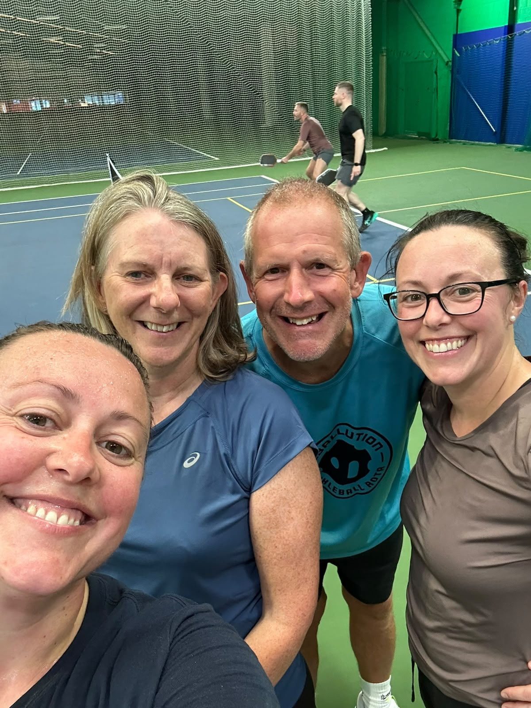

Wrexham is a regular stop for us when we're in the UK. We first played here in August 2025, right when the pickleball courts opened, and we've been returning ever since. We analysed one of our matches at Wrexham Tennis & Padel Centre with PBVision to see how it stacked up.

Pickleball was only introduced here in summer 2025 with two dedicated courts, but it's grown quickly — the centre now runs 8 courts in total, two of which are set aside for pickleball. Anyone can book a court for a very reasonable £8/hour, and the acrylic surface is a great fit for the game.
There are regular coaching sessions for every level, from complete beginners through to advanced, all led by a level 2 qualified coach — worth booking if you want some structured coaching alongside your open play.
Our take: hard to beat on value — good courts, low prices, and coaching on tap.
We uploaded one of our games from Wrexham to PBVision and broke down what actually happened on court.
A solid win to close out the session. Dave's return game was the standout, rated as his strongest shot on the day, and accuracy held up well throughout. The breakdown flagged shot selection as worth a look — drives and drops made up almost all of Dave's shots on the day, with dinks barely featuring.
Watch the full PBVision breakdown →| Court quality | ★★★★☆ |
| Quality of games | ★★★★☆ |
| Ease of joining | ★★★★★ |
| Competitive level | ★★★★☆ |
| Value | ★★★★★ |
Would we go back? Yes, without question. Wrexham's pickleball scene is still young, but the courts, pricing, and coaching on offer at Wrexham Tennis & Padel Centre make it an easy stop whenever we're in the UK.
Pickleball is also available on the multi-use courts at Wrexham University, a useful backup if the main centre's dedicated courts are busy.
Another multi-use option just outside Wrexham itself, with pickleball available alongside other sports at the leisure centre.
The two pickleball courts are shared with a busy tennis and padel schedule, so reserve early, especially for evening slots.
The level 2 qualified coach runs sessions for every level — worth booking if you want structured coaching alongside open play.
As with most UK community courts, come prepared rather than relying on loaner equipment.
Wrexham University and Plas Madoc Leisure Centre both offer multi-use courts if the main centre is fully booked.
Wrexham's pickleball scene is still young — the dedicated courts only opened in summer 2025 — but it's grown fast, and Wrexham Tennis & Padel Centre is the clear anchor for the city. Great value, solid coaching, and a proper acrylic surface make it an easy recommend whenever we're passing through the UK.